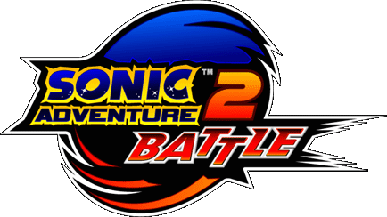
K A U Ê D E H A R O M E I R E L E S
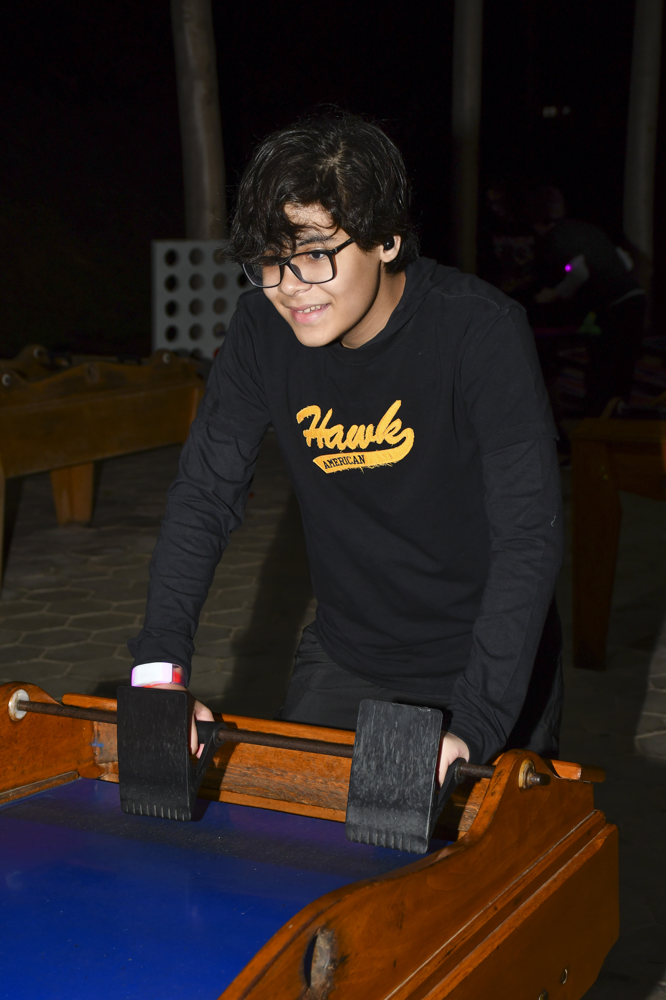
Nome: Kauê de Haro Meireles
Idade: 15 anos
Localização: Osasco - SP
Interesses: jogos, programação e desenvolvimento de jogos.
Uma página sobre os meus interesses, curiosidades e os lugares que já conheci ou que ainda quero conhecer
C U R I O S I D A D E S
- Gosto muito de gatos, apesar de não ter um por morar em apartamento.
- Meus jogos favoritos são ULTRAKILL, OneShot, Sonic the hedgehog e The Binding of Isaac.
- Gosto de programar em SQL, HTML e Java.
- Tenho muito interesse em desenvolvimento de jogos 2D e modelagem 3D; por isso, busco aprender GameMaker e Blender.
L U G A R E S
EU JÁ CONHECI
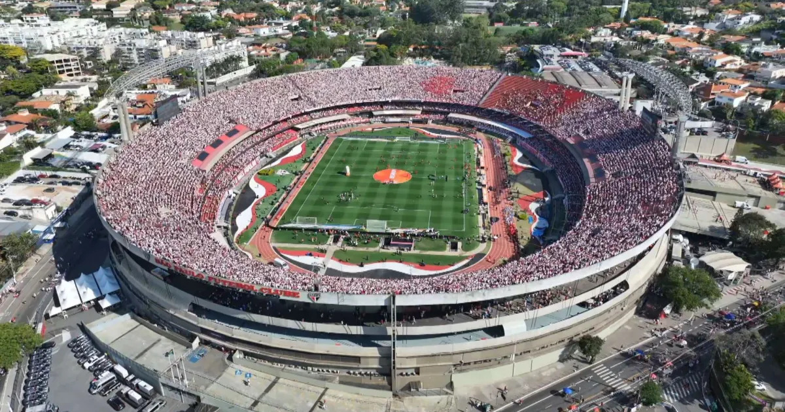
Estádio Cícero Pompeu de Toledo
Já visitei o Morumbi quatro vezes: para jogos do São Paulo em 2019, 2024 e 2026, e para um jogo do Santos em 2025. Saiba mais.
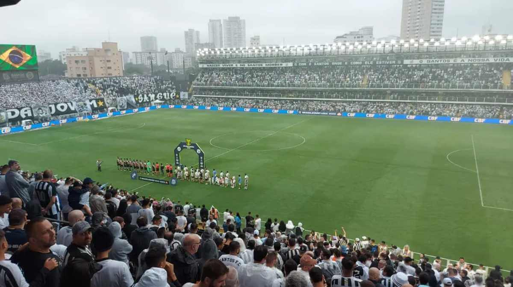
Estádio Urbano Caldeira
A Vila Belmiro é o estádio do Santos. Fui uma vez para assistir Santos x Vasco no Brasileirão de 2023; um jogo muito importante para os dois times. Saiba mais.
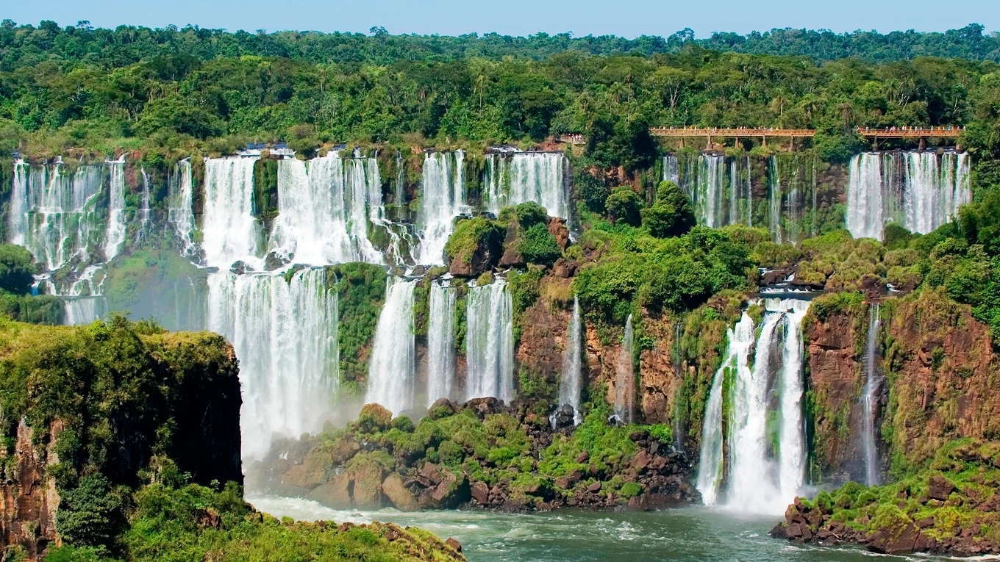
Foz do Iguaçu
Em 2024, viajei com a minha família para o Paraná, para conhecer as Cataratas do Iguaçu e fazer compras no Paraguai. Saiba mais.
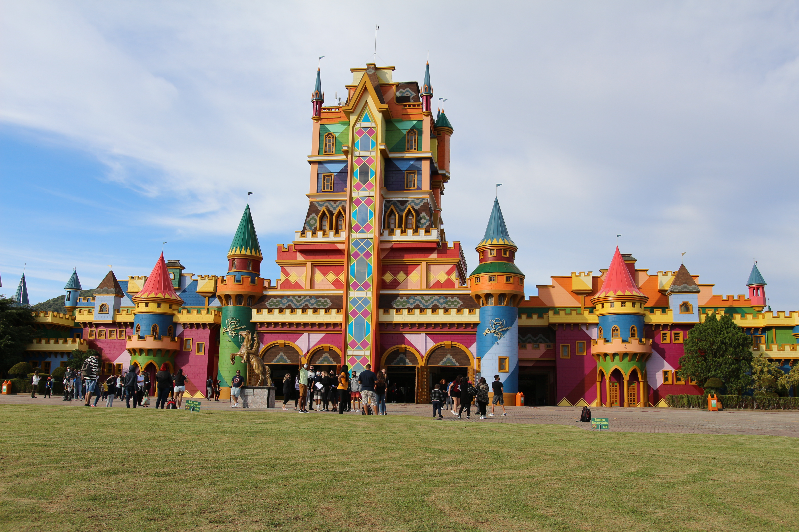
Beto Carrero World
Em 2025, fui a Penha, em Santa Catarina, para visitar o parque de diversões e suas atrações. Saiba mais.

Ilhabela
Fui de balsa durante uma visita a São Sebastião. Mesmo com chuva, achei o passeio de balsa e o letreiro muito legais. Saiba mais.
.jpg)
Rio Grande do Norte
Uma viagem para conhecer a região e a cidade de Natal. Saiba mais.
GOSTARIA DE CONHECER
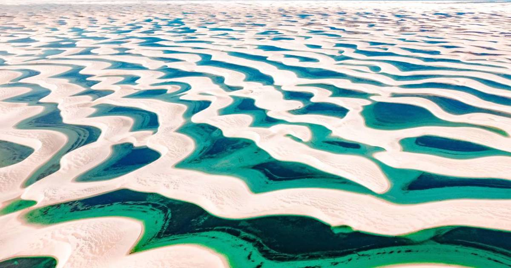
Lençóis Maranhenses
Quero conhecer as lagoas cristalinas entre as dunas desse paraíso brasileiro. Saiba mais.
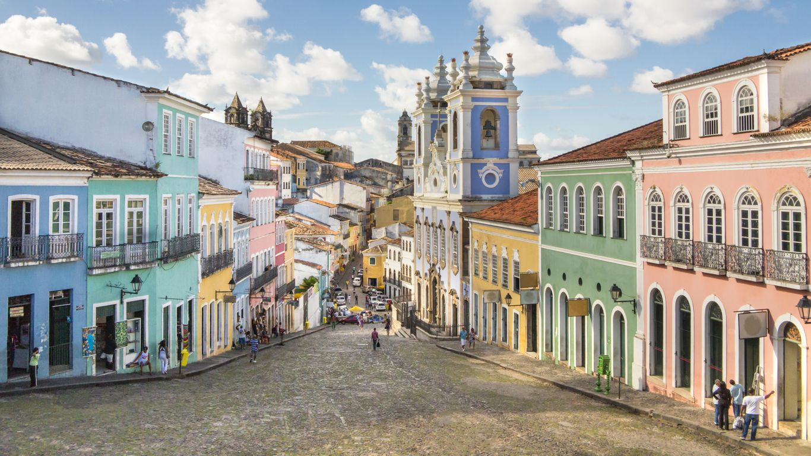
Salvador
Gostaria de conhecer a cultura, a história e o Pelourinho na capital baiana. Saiba mais.
.jpg)
Fernando de Noronha
Praias, vida marinha e projetos ambientais como o Projeto Tamar tornam o arquipélago especial. Saiba mais.
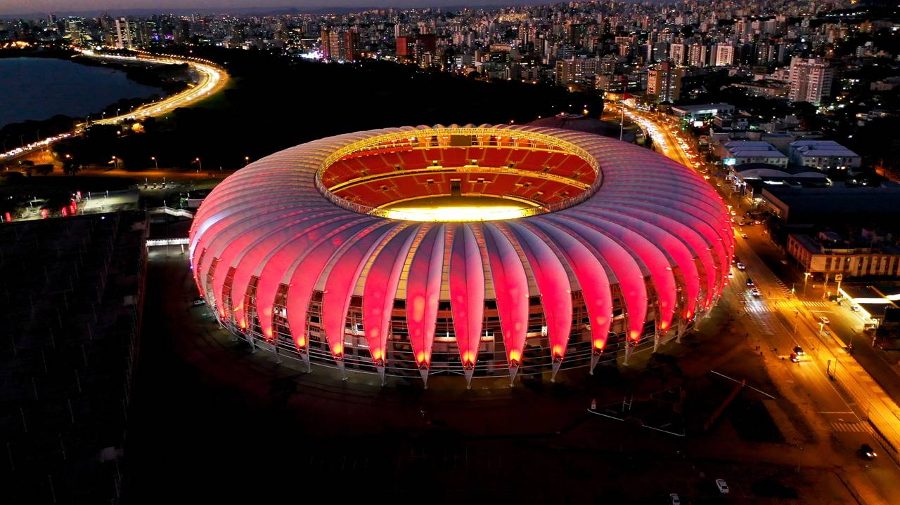
Estádio Beira-Rio
Um dos estádios mais bonitos do país, com tecnologia e uma torcida empolgante. Saiba mais.
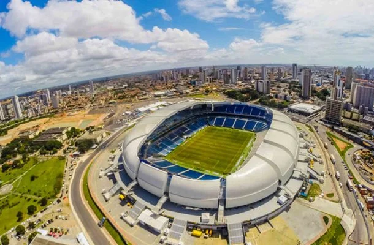
Arena das Dunas
O estádio de Natal tem uma arquitetura marcante e foi palco de jogos da Copa do Mundo de 2014. Saiba mais.
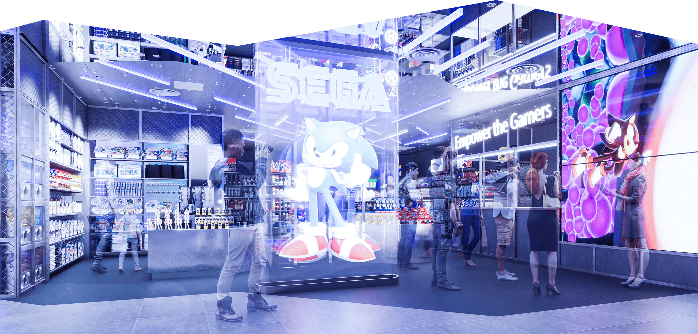
Japão
Quero visitar as lojas, museus e a cultura dos jogos da Sega e da Nintendo. Saiba mais.